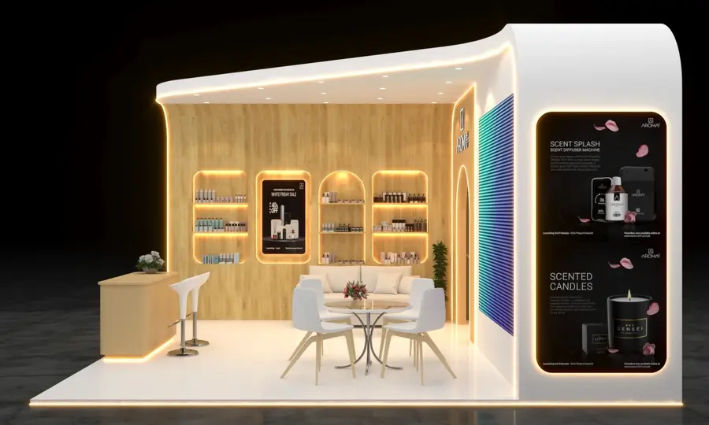

In-House vs Outsourced Exhibition Stall Fabrication: What Changes For You
Who actually builds your stall matters as much as who designs it. Here is how in-house and outsourced fabrication differ and what to ask before you book.
By Expo Stalls Fabrication · Published 6 October 2026

In-house fabrication means the company selling you the stall also builds it in its own workshop. Outsourced fabrication means it sells the stall and passes the build to another workshop. Outsourcing can work for simple jobs, but in-house builds generally give you tighter control over schedule, quality checks and accountability, which matters most on large, custom or time-pressured stalls.
In-House Fabrication
- Design, build and installation sit within one team
- Changes after approval can be handled directly in the workshop
- Dry-build and inspection happen before anything ships
- One party is accountable if something goes wrong
- Capacity is limited to what the workshop can build at once
Outsourced Fabrication
- The seller manages a separate workshop's schedule
- Changes pass through an extra layer of communication
- Quality checks depend on the subcontractor's process
- Responsibility can be shared, which makes disputes harder
- Can scale quickly across many projects or cities
Where The Difference Shows Up
1. Schedule
Stall builds are tight. When one party designs and another builds, a late approval or a change to the drawing has to travel between them, and each handover costs time. An in-house team can adjust the build plan the same day.
2. Quality control
A workshop dry-build, where the stall is assembled once before it is transported, catches errors in dimensions, fittings and finishes while they are still cheap to fix. Ask any fabricator whether this step is included and who does it. We explain the stages in how expo stall fabrication works.
3. Accountability
If a panel does not fit on site, you want one party responsible for fixing it. With a broker model you may be caught between the company that sold the stall and the workshop that built it.
4. On-site fixes
Problems during move-in are easier to solve when the people on site know how the stall was built. That is the reasoning behind keeping fabrication and installation with the same team.
5. Cost transparency
Outsourcing is not automatically more expensive, but an extra party usually takes a margin. Ask for an itemised quote either way, and compare it against our cost guide for typical starting prices.
When Outsourced Is Fine
Outsourcing is a reasonable choice for graphics-only jobs, simple shell-scheme fit-outs and projects across many cities at once. The key is to know it is happening. Ask where the stall will be built and by whom, and if the answer is vague, treat that as information. If your main choice is the format rather than the builder, read shell scheme vs custom exhibition stall.
Questions To Ask Any Fabricator
- Where will my stall be built, and can I visit before it ships?
- Is the workshop yours, or do you subcontract the build?
- Do you dry-build the stall before transport?
- Who installs it on site, and who is responsible if something needs fixing?
- What happens if the design changes after approval?
How We Work
Our Karachi and Lahore workshops are located in the basements of our offices, and the team that designs your stall is the team that fabricates and installs it. Read more on our exhibition stall fabrication page, or use the fabricator scorecard to compare us with anyone else you are considering.
An Example: A Late Change
Imagine you decide, ten days before the show, to move the product shelves to the other side of the stand. In an in-house model, the designer, the workshop and the installation crew are one team, so the drawing is updated, the panels are re-cut in the workshop and the new layout is checked in the dry-build. In an outsourced model, the request goes from you to the seller, from the seller to the workshop, and back again for confirmation. Each step takes time, and the person who understands your brand may not be the person doing the cutting. Neither model makes late changes free, but fewer handovers make them easier to absorb.
The Limits Of In-House
In-house is not automatically better. A single workshop can only build so many stalls at once, so a busy exhibition month can fill capacity, which is why booking early matters. A small workshop may also be less suited to very large or highly specialised builds. If a fabricator says it builds in-house, ask to see the workshop. Our own exhibition stall fabrication page describes what our carpentry, metalwork, printing and finishing teams do, and the fabricator scorecard helps you test any claim.
Comparing Cost Fairly
Do not compare the two models by the bottom line alone. Ask each fabricator to price the same booth size, materials, graphics, lighting, transport and installation, and note what is excluded. For typical starting prices by booth size, use the exhibition stall cost guide, and for planning dates use the exhibition stall checklist.
Frequently Asked Questions
What does in-house stall fabrication mean?
It means the company that designs and sells your stall also builds it in its own workshop, rather than passing the build to a separate contractor.
Is outsourced fabrication cheaper?
Not necessarily. An extra party usually adds a margin, so the saving depends on the quote. Ask for an itemised quote either way and compare like for like.
How can I tell if a fabricator really builds in-house?
Ask to visit the workshop, request photographs of stalls in progress and ask who installs the stall on site. Vague answers are a signal to dig further.
Where do Expo Stalls Fabrication build stalls?
Stalls are built at our Karachi or Lahore workshop, both located in the basements of our offices, and delivered and installed at the venue by our team.
Does in-house fabrication make the stall faster?
It can, because changes and approvals do not pass between separate companies. Timeline still depends on stall size, materials and how quickly designs and artwork are signed off.
Want To See Where Your Stall Is Built?
Ask us for a workshop visit by appointment, or send your brief and we will quote against it.